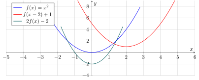
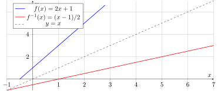
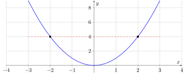
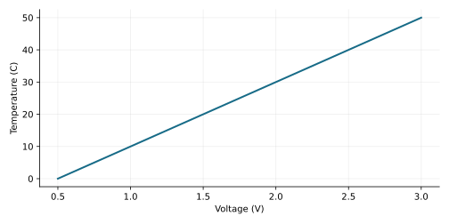

Transformations, Compositions, and Inverse Functions
Opening investigation: How do mathematical models change?
Suppose a laboratory instrument reports a measurement with a fixed baseline offset. Another laboratory measures the same quantity using a different scale. These changes correspond to vertical translations and stretches of a function. When a model uses the output of one calculation as the input to another, we compose functions; when we recover an input from a measured output, we use an inverse. These operations are central to scientific modeling and later calculus.
Learning outcomes
After completing this chapter, you should be able to describe and graph translations, reflections, and stretches; map points under combined transformations; combine functions while respecting domains; construct and interpret compositions; determine domains of compositions; test whether a function is one-to-one; find, verify, and graph inverses; and implement these ideas using R and Python.
Prerequisite check
Before proceeding, review function notation, domains and ranges, graphing, and slope from Chapters 3–4. Evaluate \(f(-2)\) for \(f(x)=x^2+1\); state the domain of \(\sqrt{x-3}\); and identify the vertex of \((x-2)^2+5\). Answers: \(5\), \([3,\infty)\), and \((2,5)\).
Chapter roadmap
Transformations change a known function; arithmetic combines two functions; composition chains them; inversion reverses a one-to-one relationship. Each operation changes what inputs are allowed and what outputs mean.
From parent functions to families
A parent function provides a familiar reference graph. Common parents include \(f(x)=x\), \(x^2\), \(|x|\), \(\sqrt{x}\), \(1/x\), and \(x^3\). Transformations create related graphs without plotting every point from scratch. The essential skill is to distinguish a change to the input from a change to the output. A change to the output affects vertical coordinates; a change to the input affects horizontal coordinates.
Investigation. Starting from \(f(x)=x^2\), list the points \((-2,4),(-1,1),(0,0),(1,1),(2,4)\). Predict the points on \(y=f(x)+3\) and \(y=f(x-3)\) before sketching.
Example 1: Parent-function recognition. Identify the parent of \(g(x)=\sqrt{x+2}-1\) and describe its starting point.
Worked solution. The parent is \(f(x)=\sqrt{x}\). Moving left two and down one sends the starting point \((0,0)\) to \((-2,-1)\).
Guided practice 1.
Identify the parent and describe \(y=|x-4|+2\). Explain each step, and check your result against the graph when appropriate.
Vertical translations
For \(g(x)=f(x)+k\), every point \((x,y)\) on the graph of \(f\) becomes \((x,y+k)\) on the graph of \(g\). A positive \(k\) shifts upward and a negative \(k\) shifts downward. The domain remains the same, while the range is shifted by \(k\). In a measurement model, a vertical shift can represent a baseline correction or a constant offset.
Investigation. Compare \(x^2\), \(x^2+2\), and \(x^2-3\) on the same axes. Track the vertex and the minimum output.
Example 2: Baseline adjustment. A sensor model is \(S(t)=2t+5\). After calibration, every reading increases by \(1.5\) units. Find the adjusted model.
Worked solution. \(A(t)=S(t)+1.5=2t+6.5\). The slope remains \(2\) because only the baseline changes.
Guided practice 2.
Find the vertex and range of \(y=(x+1)^2-4\). Explain each step, and check your result against the graph when appropriate.
Horizontal translations
For \(g(x)=f(x-h)\), the graph shifts \(h\) units to the right. The apparent reversal is explained by solving \(x-h=a\): to obtain the original output \(f(a)\), the new input must be \(x=a+h\). Thus a point \((a,f(a))\) moves to \((a+h,f(a))\). If \(h<0\), the shift is left. Domain restrictions move with the graph.
Investigation. Compare \(\sqrt{x}\), \(\sqrt{x-4}\), and \(\sqrt{x+2}\); write each domain before graphing.
Example 3: Shift and domain. Find the domain and vertex of \(g(x)=(x-4)^2+1\).
Worked solution. Every real input is allowed, so the domain is \(\mathbb R\). The vertex moves from \((0,0)\) to \((4,1)\).
Guided practice 3.
Find the domain of \(y=\sqrt{x+5}\). Explain each step, and check your result against the graph when appropriate.
Reflections across coordinate axes
The graph of \(g(x)=-f(x)\) is the reflection of \(f\) across the horizontal axis: \((x,y)\) becomes \((x,-y)\). The graph of \(h(x)=f(-x)\) reflects across the vertical axis: \((x,y)\) becomes \((-x,y)\). For even functions, horizontal reflection produces the same graph; for odd functions, reflecting horizontally or vertically produces the same result.
Investigation. Compare \(\sqrt{x}\), \(-\sqrt{x}\), and \(\sqrt{-x}\). Explain their different domains and ranges.
Example 4: Reflection and domain. Describe \(g(x)=\sqrt{-x}\) and determine its domain.
Worked solution. Reflect \(\sqrt{x}\) across the vertical axis. The radicand requires \(-x\ge0\), hence \(x\le0\). The range is \([0,\infty)\).
Guided practice 4.
Compare the graphs of \(y=-|x|\) and \(y=|-x|\). Explain each step, and check your result against the graph when appropriate.
Vertical stretching and compression
For \(g(x)=af(x)\), each output is multiplied by \(a\). If \(|a|>1\), vertical distances from the horizontal axis increase; if \(0<|a|<1\), they decrease. A negative \(a\) also reflects across the horizontal axis. Vertical scaling changes units and magnitude, but it does not change the allowable input values.
Investigation. Compare \(x^2\), \(3x^2\), and \(\frac14x^2\). For each, find the output at \(x=2\) and discuss which graph appears narrower.
Example 5: Scaled quadratic. Describe \(g(x)=-2(x-1)^2+3\) and find its maximum.
Worked solution. Shift right one, stretch vertically by factor two, reflect across the horizontal axis, and shift up three. The vertex \((1,3)\) is a maximum.
Guided practice 5.
Find the vertex and maximum of \(y=-3(x-2)^2+7\). Explain each step, and check your result against the graph when appropriate.
Horizontal stretching and compression
For \(g(x)=f(bx)\) with \(b\ne0\), a point \((a,f(a))\) moves to \((a/b,f(a))\). Thus the horizontal scale factor is \(1/|b|\), not \(|b|\). When \(|b|>1\) the graph is compressed horizontally; when \(0<|b|<1\) it is stretched. A negative \(b\) also reflects across the vertical axis.
Investigation. Compare \(|x|\), \(|2x|\), and \(|x/2|\). Explain why the scale factor appears reciprocal.
Example 6: Horizontal scale. Describe \(g(x)=\sqrt{3x}\) and find its domain.
Worked solution. The graph of \(\sqrt{x}\) is compressed horizontally by factor \(1/3\). Since \(3x\ge0\), its domain remains \([0,\infty)\).
Guided practice 6.
For \(f(x)=x^2\), compare \(f(3x)\) and \(3f(x)\). Explain each step, and check your result against the graph when appropriate.
Combining transformations systematically
A useful general form is \(g(x)=a f(b(x-h))+k\). Begin by identifying the reference graph and the roles of \(a,b,h,k\). The point-mapping formula is \((u,v)\mapsto(h+u/b,\,k+av)\) for \(b\ne0\). This formula handles reflections, stretches, and translations simultaneously and avoids ambiguity about the order of operations. Always check the transformed domain.
Investigation. Use the points \((0,0),(1,1),(4,2)\) on \(y=\sqrt{x}\) to generate points on \(g(x)=-2\sqrt{3(x-1)}+4\).
Example 7: Point mapping. If \((2,5)\) is on \(y=f(x)\), find the corresponding point on \(y=3f(2(x-4))-1\).
Worked solution. Solve \(2(x-4)=2\) to obtain \(x=5\). The output is \(3(5)-1=14\), so the new point is \((5,14)\).
Guided practice 7.
Map \((2,3)\) under \(y=-2f(4(x-1))+5\). Explain each step, and check your result against the graph when appropriate.
Function arithmetic and domains
Given functions \(f\) and \(g\), define \((f+g)(x)=f(x)+g(x)\), \((fg)(x)=f(x)g(x)\), and \((f/g)(x)=f(x)/g(x)\) wherever both original expressions are defined. Division additionally requires \(g(x)\ne0\). The domain of a combination is therefore the intersection of the original domains, with further exclusions for division. Simplifying an expression does not restore excluded inputs.
Investigation. Let \(f(x)=\sqrt{x-1}\) and \(g(x)=1/(x-3)\). Determine the domains of \(f+g\), \(fg\), and \(f/g\).
Example 8: A removable-looking restriction. Let \(f(x)=x^2-1\) and \(g(x)=x-1\). Find \((f/g)(x)\) and its domain.
Worked solution. For \(x\ne1\), \((f/g)(x)=(x^2-1)/(x-1)=x+1\). The original quotient is undefined at \(x=1\), so the domain excludes \(1\).
Guided practice 8.
If \(f(x)=\sqrt{x}\) and \(g(x)=x-2\), determine the domain of \(f/g\). Explain each step, and check your result against the graph when appropriate.
Composition of functions
The composition \((f\circ g)(x)=f(g(x))\) means apply \(g\) first, then use its output as the input to \(f\). The order matters: \(f\circ g\) and \(g\circ f\) generally differ. A composition is defined only where \(x\) belongs to the domain of \(g\) and \(g(x)\) belongs to the domain of \(f\). This input-output chain is useful for multistage models, such as converting elapsed time into dosage and then dosage into predicted response.
Investigation. Draw an input-output diagram for \(g(x)=2x+1\) and \(f(x)=x^2\); compare \(f(g(2))\) with \(g(f(2))\).
Example 9: Two orders of composition. For \(f(x)=x^2+1\) and \(g(x)=3x-2\), compute both compositions.
Worked solution. \((f\circ g)(x)=(3x-2)^2+1=9x^2-12x+5\). \((g\circ f)(x)=3(x^2+1)-2=3x^2+1\).
Guided practice 9.
For \(f(x)=2x+1\) and \(g(x)=x^2\), compute \((f\circ g)(-2)\) and \((g\circ f)(-2)\). Explain each step, and check your result against the graph when appropriate.
Domains of composite functions
The domain of \(f\circ g\) is \(\{x\in\operatorname{Dom}(g):g(x)\in\operatorname{Dom}(f)\}\). A frequent mistake is to check only the inner function. For example, \(\sqrt{1-x^2}\) requires \(1-x^2\ge0\), not merely that the polynomial \(1-x^2\) exists. If a denominator occurs in either stage, it must also be nonzero.
Investigation. For \(f(u)=\sqrt{u}\) and \(g(x)=2-x\), identify the domain of \(f\circ g\) and explain why \(g\circ f\) has a different domain.
Example 10: Composite domain. If \(f(u)=1/(u-4)\) and \(g(x)=x^2\), find the domain of \(f\circ g\).
Worked solution. \((f\circ g)(x)=1/(x^2-4)\), which requires \(x\ne-2\) and \(x\ne2\).
Guided practice 10.
Find the domain of \(\sqrt{9-x^2}\). Explain each step, and check your result against the graph when appropriate.
One-to-one functions and the horizontal-line test
A function is one-to-one if different inputs always produce different outputs. Equivalently, \(f(a)=f(b)\) implies \(a=b\). A graph passes the horizontal-line test if every horizontal line intersects it at most once. A one-to-one function can be reversed without ambiguity. The quadratic \(x^2\) fails this test on all real numbers, but it passes when its domain is restricted to \([0,\infty)\).
Investigation. Compare \(x^2\) and \(x^3\). Explain which has a unique input for every output and how domain restriction changes the answer.
Example 11: Restricting a domain. Is \(f(x)=(x-2)^2\) one-to-one on \([2,\infty)\)?
Worked solution. Yes. On \(x\ge2\), the function is strictly increasing, so no output is repeated. On all real numbers, it is not one-to-one.
Guided practice 11.
Explain why \(f(x)=|x|\) is not one-to-one on \(\mathbb R\). Explain each step, and check your result against the graph when appropriate.
Inverse functions and their meaning
If \(f\) is one-to-one, its inverse \(f^{-1}\) reverses the input-output relationship: \(f(a)=b\) exactly when \(f^{-1}(b)=a\). The domain of \(f^{-1}\) is the range of \(f\), and the range of \(f^{-1}\) is the domain of \(f\). The notation \(f^{-1}\) does not mean \(1/f\). Graphs of inverse functions are reflections across \(y=x\).
Investigation. Make a table for \(f(x)=2x+3\) and reverse the input and output columns. Plot both sets of points with \(y=x\).
Example 12: Inverse of an affine model. Find the inverse of \(f(x)=5x-7\).
Worked solution. Write \(y=5x-7\), interchange variables to get \(x=5y-7\), then solve \(y=(x+7)/5\). Thus \(f^{-1}(x)=(x+7)/5\).
Guided practice 12.
Find the inverse of \(f(x)=3x+8\). Explain each step, and check your result against the graph when appropriate.
Finding and checking inverses algebraically
To find an inverse, write \(y=f(x)\), exchange \(x\) and \(y\), solve for \(y\), and record the necessary domain and range restrictions. Verify by computing \(f(f^{-1}(x))=x\) and \(f^{-1}(f(x))=x\) on the appropriate domains. If the original function is not one-to-one, first restrict its domain to a suitable interval.
Investigation. Derive the inverse of \(f(x)=(x-1)^2\) on \([1,\infty)\) and test both compositions.
Example 13: Quadratic inverse. Find the inverse of \(f(x)=(x+2)^2+1\) on \([-2,\infty)\).
Worked solution. From \(y=(x+2)^2+1\), obtain \(x=-2+\sqrt{y-1}\) using the nonnegative branch. Hence \(f^{-1}(x)=-2+\sqrt{x-1}\), defined for \(x\ge1\).
Guided practice 13.
Find the inverse of \(f(x)=\sqrt{x-1}\) and its domain. Explain each step, and check your result against the graph when appropriate.
Inverse models, units, and interpretation
In applications, an inverse answers a different question from the original model. If a calibration equation converts concentration (mg/L) into sensor signal (mV), the inverse converts signal back into concentration. The physical domain and range must remain meaningful; algebraic inverses can produce implausible predictions when used outside the calibration interval.
Investigation. A signal model is \(S(c)=0.8c+2\) for \(0\le c\le20\). Find the range of \(S\), its inverse, and the concentration corresponding to a signal of \(10\) mV.
Example 14: Calibration inverse. A sensor reads \(S(c)=1.2c+0.5\). Estimate \(c\) when \(S=8.9\).
Worked solution. \(c=(8.9-0.5)/1.2=7\). The numerical answer has concentration units, assuming the model applies at that reading.
Guided practice 14.
Invert \(S(c)=2.5c+1\) and interpret \(S^{-1}(11)\). Explain each step, and check your result against the graph when appropriate.
Visual investigation I: the geometry of transformations

Questions. Locate the vertex of each curve; calculate the image of \((1,1)\); distinguish a vertical stretch from a horizontal translation; and identify how the minimum output changes. Explain which transformations preserve the domain and which alter the range.
Visual investigation II: composition as a two-stage process
At \(x=2\), the inner function returns \(5\) and the outer returns \(25\). Reversing the order gives \(g(f(2))=9\). Draw a second flowchart for the reverse order and discuss why order is mathematically consequential.
Visual investigation III: reflecting inverse graphs

For each point \((a,b)\) on the original line, find \((b,a)\) on the inverse. Verify that the two graphs are mirror images across \(y=x\). Explain how this reflection exchanges the domain and range.
Visual investigation IV: why domain restriction matters

The horizontal line \(y=4\) intersects \(y=x^2\) twice. Restricting the domain to \(x\ge0\) removes the negative branch and permits the inverse \(f^{-1}(x)=\sqrt{x}\) on \(x\ge0\). Why is \(-\sqrt{x}\) the inverse for the restriction \(x\le0\) instead?
Computational laboratory A: exploring transformations
Graph a parent quadratic and a transformed quadratic. Compare vertices, reflection, and vertical scaling. Predict the output before running each program. Run the R code first, followed by Python.
R code
x <- seq(-4, 6, length.out=500)
f <- function(x) x^2
plot(x, f(x), type="l", lwd=2, col="blue", ylim=c(-4,12),
xlab="x", ylab="Output", main="Function transformations")
lines(x, -2*f(x-2)+5, col="red", lwd=2)
legend("topright", c("x^2", "-2(x-2)^2+5"),
col=c("blue", "red"), lty=1, lwd=2)Python code
import numpy as np
import matplotlib.pyplot as plt
x = np.linspace(-4, 6, 500)
f = lambda z: z**2
plt.plot(x, f(x), label="x^2")
plt.plot(x, -2*f(x-2)+5, label="-2(x-2)^2+5")
plt.ylim(-4, 12)
plt.xlabel("x"); plt.ylabel("Output")
plt.legend(); plt.grid(True); plt.show()Interpretation and reflection.
Identify the maximum of the transformed graph. What happens if the coefficient \(-2\) becomes \(-1/2\)? Compare numerical output with your algebraic reasoning.
Computational laboratory B: composition and valid domains
Construct \(f(g(x))=\sqrt{3-x^2}\) and ensure the square root is evaluated only on valid inputs. Predict the output before running each program. Run the R code first, followed by Python.
R code
f <- function(x) sqrt(x)
g <- function(x) 3 - x^2
x <- seq(-2, 2, length.out=401)
y <- rep(NA_real_, length(x))
valid <- g(x) >= 0
y[valid] <- f(g(x[valid]))
plot(x, y, type="l", lwd=2, col="blue",
xlab="x", ylab="f(g(x))",
main="Composite function with restricted domain")
print(c(-sqrt(3), sqrt(3)))Python code
import numpy as np
import matplotlib.pyplot as plt
x = np.linspace(-2, 2, 401)
g = lambda z: 3-z**2
f = lambda u: np.sqrt(u)
y = np.full_like(x, np.nan)
valid = g(x) >= 0
y[valid] = f(g(x[valid]))
plt.plot(x, y)
plt.xlabel("x"); plt.ylabel("f(g(x))")
plt.grid(True); plt.show()
print("Domain:", -np.sqrt(3), np.sqrt(3))Interpretation and reflection.
Explain why the composite domain is \([-\sqrt3,\sqrt3]\). Why does a plotting program need an explicit validity mask? Compare numerical output with your algebraic reasoning.
Computational laboratory C: inverse calibration
Convert concentration to signal, invert the model, and verify the round trip. Predict the output before running each program. Run the R code first, followed by Python.
R code
signal <- function(c) 0.8*c + 2
inverse <- function(s) (s-2)/0.8
c <- seq(0, 20, length.out=101)
s <- signal(c)
plot(c, s, type="l", col="blue", lwd=2,
xlab="Concentration (mg/L)", ylab="Signal (mV)")
print(data.frame(signal=c(2,6,10,18),
concentration=inverse(c(2,6,10,18))))
stopifnot(all(abs(inverse(signal(c))-c) < 1e-10))Python code
import numpy as np
import matplotlib.pyplot as plt
signal = lambda c: 0.8*c+2
inverse = lambda s: (s-2)/0.8
c = np.linspace(0, 20, 101)
plt.plot(c, signal(c))
plt.xlabel("Concentration (mg/L)")
plt.ylabel("Signal (mV)"); plt.grid(True); plt.show()
for s in [2, 6, 10, 18]:
print(f"Signal {s:.1f} -> concentration {inverse(s):.2f}")
assert np.allclose(inverse(signal(c)), c)Interpretation and reflection.
Find the signal range for concentrations between \(0\) and \(20\) mg/L. Explain why extrapolating outside this interval needs validation. Compare numerical output with your algebraic reasoning.
Workshop 1: translating a dose-response curve
A hypothetical response score is \(R(d)=-(d-4)^2+16\) for \(0\le d\le8\). (a) Find the dose that maximizes the score. (b) Define \(A(d)=R(d)+3\) and interpret the shift. (c) Define \(B(d)=R(d-1)\); determine the mathematical domain inherited from the original model and explain why an extended physical domain would need justification. (d) Compare the two models at \(d=4\). (e) Sketch the graphs with labeled units.
Guided solution. The vertex of \(R\) is \((4,16)\), so the maximum is \(16\) at \(d=4\). \(A\) adds three points to every output and has maximum \(19\). For \(B\), the condition \(0\le d-1\le8\) gives \(1\le d\le9\); the curve shifts right one unit. \(A(4)=19\) and \(B(4)=R(3)=15\). In practice, a transformed response curve is a modeling hypothesis, not evidence of treatment effectiveness.
Workshop 2: two-stage laboratory processing
A specimen concentration \(c\) (mg/L) produces a signal \(g(c)=1.5c+2\) mV. A second instrument reports an adjusted value \(f(s)=0.4s-0.8\). (a) Write \(f\circ g\) and simplify. (b) Compute the final report at \(c=6\). (c) Reverse the operations algebraically and compare \(g\circ f\). (d) Describe the units at each stage. (e) Explain why the two compositions are not interchangeable.
Guided solution. \(f(g(c))=0.4(1.5c+2)-0.8=0.6c\), so at \(c=6\) the report is \(3.6\) in the second instruments output units. By contrast, \(g(f(c))=1.5(0.4c-0.8)+2=0.6c+0.8\), a different formula that may be physically meaningless if \(f\) expects a signal rather than a concentration. Function order must respect input and output units.
Workshop 3: recovering an input from a measured output
A calibration model is \(S(c)=2+0.8c\) for \(0\le c\le20\), with signal \(S\) in mV and concentration \(c\) in mg/L. (a) Find the range of \(S\). (b) Find \(S^{-1}\). (c) Recover \(c\) when \(S=11.6\). (d) Verify both compositions. (e) Explain why a reading of \(25\) mV should not be used for unvalidated extrapolation.
Guided solution. The range is \([2,18]\) mV. The inverse is \(S^{-1}(s)=(s-2)/0.8\) for \(2\le s\le18\). Thus \(S^{-1}(11.6)=12\) mg/L. Algebraically, \(S^{-1}(S(c))=c\) for \(c\in[0,20]\) and \(S(S^{-1}(s))=s\) for \(s\in[2,18]\). A signal of \(25\) lies outside the validated range.
Workshop 4: restricted quadratic inverses
A hypothetical cost model is \(C(q)=(q-3)^2+5\). (a) Explain why it is not one-to-one on \(\mathbb R\). (b) Restrict the domain to \(q\ge3\). (c) Find the inverse and its domain. (d) Find the input corresponding to output \(14\). (e) Sketch the original restricted graph, inverse, and \(y=x\).
Guided solution. The unrestricted model gives equal costs at \(q=3-t\) and \(q=3+t\). On \(q\ge3\) it is increasing. Solving \(y=(q-3)^2+5\) with \(q\ge3\) gives \(q=3+\sqrt{y-5}\). Thus \(C^{-1}(y)=3+\sqrt{y-5}\) for \(y\ge5\), and \(C^{-1}(14)=6\).
Workshop 5: diagnosing transformation errors
A student claims that \(f(2x)\) stretches a graph horizontally by factor \(2\), and that \(f^{-1}(x)=1/f(x)\). (a) Use \(f(x)=x^2\) to disprove the first claim using a point. (b) Use \(f(x)=2x+1\) to disprove the second. (c) State the correct horizontal scaling rule. (d) Find and verify the actual inverse of \(2x+1\). (e) Explain how graphing can help detect both errors.
Guided solution. The point \((2,4)\) on \(y=x^2\) corresponds to \((1,4)\) on \(y=f(2x)\), so the graph compresses by factor \(1/2\). For \(f(x)=2x+1\), \(1/f(x)=1/(2x+1)\) while \(f^{-1}(x)=(x-1)/2\). Inverse graphs reflect across \(y=x\); reciprocal graphs generally do not.
Chapter review: key ideas and common errors
| Operation | Rule and interpretation |
|---|---|
| Vertical shift | \(f(x)+k\): outputs change by \(k\) |
| Horizontal shift | \(f(x-h)\): shift right by \(h\) |
| Vertical scaling | \(af(x)\): output distances scaled by \(|a|\) |
| Horizontal scaling | \(f(bx)\): input coordinates scaled by \(1/|b|\) |
| Composition | \((f\circ g)(x)=f(g(x))\); apply \(g\) first |
| Inverse | \(f^{-1}(f(x))=x\) on the original domain |
Common errors to avoid. Confusing \(f(x-h)\) with a left shift; treating \(f(2x)\) as a horizontal stretch by two; composing functions in the wrong order; forgetting domain restrictions; assuming every function has an inverse; confusing \(f^{-1}(x)\) with \(1/f(x)\); and using inverse models outside the measured range.
Chapter exercises
Complete the following exercises without technology first. Then use R or Python to verify selected graphs or calculations. Explain the domain of every function you construct.
Transformations and graph interpretation
Describe all transformations taking \(y=x^2\) to \(y=3(x-2)^2-4\). State the vertex and range.
Graph \(y=-|x+3|+2\) using five transformed points. State the maximum.
Find the domain and range of \(y=\sqrt{x-5}+1\).
Describe the transformation from \(y=1/x\) to \(y=1/(x+2)-3\) and identify both asymptotes.
Compare \(f(3x)\) and \(3f(x)\) for \(f(x)=x^2\).
If \((4,-2)\) lies on \(y=f(x)\), find its image on \(y=-3f(2(x-1))+5\).
Explain why the graph of \(f(-x)\) reflects across the vertical axis.
Find the domain of \(g(x)=2\sqrt{4-x}-1\) and state its endpoint.
Determine whether \(y=-2(x+1)^2+6\) has a maximum or minimum, and find its value.
For \(f(x)=|x|\), compare \(f(x-2)+1\) and \(f(x+1)-2\) using vertices.
Let \(f(x)=\sqrt{x}\) and \(g(x)=x-4\). Find the domain of \(f+g\).
For the same functions, determine the domain of \(f/g\).
Let \(f(x)=x^2+1\) and \(g(x)=2x-3\). Find \(f\circ g\) and \(g\circ f\).
For \(f(x)=1/(x-2)\) and \(g(x)=x^2\), determine the domain of \(f\circ g\).
For \(f(x)=\sqrt{x+1}\) and \(g(x)=3-x\), determine the domain of \(f\circ g\).
Explain in words why \((f\circ g)(x)\) is generally not equal to \((g\circ f)(x)\).
Find \((f\circ g)(2)\) when \(f(u)=u^3\) and \(g(x)=x-5\).
If \(f(x)=x+2\) and \(g(x)=1/x\), compute both compositions and state their domains.
Determine whether \(f(x)=x^3-1\) is one-to-one on \(\mathbb R\). Justify.
Explain why \(f(x)=x^2-4\) is not one-to-one on \(\mathbb R\).
Find the inverse of \(f(x)=4x-9\) and verify by composition.
Find the inverse of \(f(x)=(x-1)/3\) and state both domains.
Find the inverse of \(f(x)=\sqrt{x+2}\) and give its domain and range.
Find the inverse of \(f(x)=(x-4)^2\) on \([4,\infty)\).
Find the inverse of \(f(x)=(x-4)^2\) on \((-\infty,4]\). Explain the difference.
A calibration function is \(S(c)=0.5c+1\) for \(0\le c\le30\). Find its inverse and valid signal range.
Use the inverse from Exercise 26 to find the concentration at signal \(9\).
For \(f(x)=2x+3\), graph \(f\), \(f^{-1}\), and \(y=x\) on common axes.
Explain why a horizontal line can intersect a graph twice even when it passes the vertical-line test.
Find \(f^{-1}(f(7))\) for a one-to-one \(f\) whose domain includes \(7\). Explain without knowing the formula.
Calculus-readiness checkpoint
For \(f(x)=x^2\), simplify \(\frac{f(a+h)-f(a)}{h}\) for \(h\ne0\). Explain why the resulting expression is useful when \(h\) becomes very small.
If \(g(x)=f(3x-6)\), identify the input to \(f\) and explain how the graph changes. This anticipates the chain rule.
A concentration model is \(C(t)=e^{-0.2t}\) for \(t\ge0\). Describe what an inverse function would answer and why the output range matters.
Show algebraically that \(f^{-1}(f(x))=x\) for \(f(x)=5x+2\) and discuss the meaning of reversing a model.
Explain how restricting a quadratic to a monotonic interval makes an inverse possible and how this prepares for inverse trigonometric functions.
Looking ahead
Chapter 6 studies polynomial and rational functions in greater depth. Transformations will help us graph their families, composition will help us analyze complex formulas, and inverse-function reasoning will later connect exponential and logarithmic functions and calculus.
Extended application: Temperature sensor conversion
A sensor reports a raw voltage. The calibration first subtracts 0.5 volts and then multiplies by 20 to obtain a temperature in degrees Celsius. The quantities in this investigation are illustrative rather than measured observations.
Formulating the mathematical model
The proposed relationship is \[T(v)=20(v-0.5).\] Before calculating, identify the input and output, their units, and the interval on which the model is being studied. Distinguish the mathematical domain from the practical domain. The numerical study uses inputs from \(0.5\) to \(3\).
Example 15: Analytical investigation. Express the calibration as a composition. Derive its inverse and find the voltage for 30 degrees Celsius.
Worked solution. Compose \(g(v)=v-0.5\) with \(f(u)=20u\). The inverse is \(v=T/20+0.5\), giving 2 V.
Connecting numerical and graphical representations
| Voltage (V) | Temperature (C) |
|---|---|
| 0.5 | 0 |
| 1.12 | 12.5 |
| 1.75 | 25 |
| 2.38 | 37.5 |
| 3 | 50 |

Interpretation. Compare the tabulated values with the graph. Identify the intervals over which the output increases or decreases, and distinguish a sampled extremum from an exact analytical extremum. Explain whether interpolation and extrapolation have the same justification in this setting.
R implementation
The following standalone script defines the model, generates predictions, and draws a labeled graph. Read the formula before running the code. The sampled range is a numerical diagnostic, not a proof of the exact range.
# Applied investigation: Temperature sensor conversion
# 1. Define the input domain and model
x <- seq(0.5, 3, length.out = 301)
y <- 20*(x-0.5)
# 2. Inspect numerical predictions
idx <- unique(round(seq(1, length(x), length.out = 5)))
print(data.frame(input = x[idx], output = y[idx]))
# 3. Visualize the model with labeled axes
plot(x, y, type = "l", lwd = 2, col = "#176B87",
xlab = "Voltage (V)", ylab = "Temperature (C)")
grid()
# 4. Check the sampled output range
print(range(y))Python implementation
Repeat the same investigation using NumPy arrays and Matplotlib. Compare the printed predictions with the R output, allowing for rounding.
# Applied investigation: Temperature sensor conversion
import numpy as np
import matplotlib.pyplot as plt
# 1. Define the input domain and model
x = np.linspace(0.5, 3, 301)
y = 20*(x-0.5)
# 2. Inspect numerical predictions
idx = np.unique(np.linspace(0, len(x)-1, 5).round().astype(int))
print(np.column_stack((x[idx], y[idx])))
# 3. Visualize the model with labeled axes
fig, ax = plt.subplots(figsize=(7, 3.6))
ax.plot(x, y, "-", color="#176B87", linewidth=2)
ax.set(xlabel="Voltage (V)", ylabel="Temperature (C)")
ax.grid(alpha=0.22)
ax.spines[["top", "right"]].set_visible(False)
fig.tight_layout()
plt.show()
# 4. Check the sampled output range
print(np.min(y), np.max(y))Guided practice: checking the model
Calculate the outputs at the two endpoints by hand. Compare them with the numerical table.
Select an interior input not listed in the table. Predict the output before evaluating it in either language.
Explain the meaning of the difference between the two endpoint outputs, including units. If appropriate, calculate the average rate of change.
Identify a physical assumption of the model and describe a circumstance in which it would fail.
Chapter project: investigating Temperature sensor conversion
Prepare a short technical report for a reader who has not studied the model. Use the preceding case as a starting point, but develop your own investigation rather than merely reproducing the worked example.
State a quantitative question that can be answered using the model. Define all variables, units, and restrictions.
Modify one meaningful numerical parameter in the formula. Explain what the change represents in the original context. Derive the revised formula and predict the direction of change before computing.
Compare the original and revised models at five common admissible inputs. Present a labeled table and explain the largest difference in the table.
Produce a graph containing both models on the same axes. Use a legend and distinguish the curves with line styles or markers. Explain the shape and any intersections.
Solve your quantitative question algebraically where possible. Verify the result using R and Python; report any differences due to numerical precision.
Discuss at least two limitations. Describe what measurements would be needed to assess the model in practice. Do not present simulated predictions as empirical evidence.
Project deliverables and assessment
Submit a two- to three-page report, the two runnable scripts, and the labeled figure. The report should stand on its own without requiring the reader to inspect the code.
| Criterion | Points |
|---|---|
| Mathematical formulation and domain | 20 |
| Analytical reasoning and verification | 25 |
| Reproducible R and Python computations | 20 |
| Graph and table quality | 15 |
| Interpretation and limitations | 20 |
| Total | 100 |
Companion scripts
Interactive investigation: Function transformations
Enable JavaScript to explore the model.
Explore and explain: Predict the vertex before moving each slider. What happens at zero stretch?